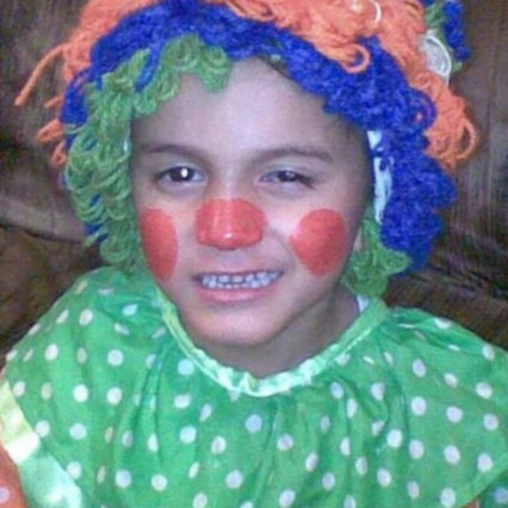

Santiago Cortez
Para entender la historia de fnaf, hay q olvidarse q estos son juegos y quiero q tomen realmente está saga como lo q es de terror, Si pero sobre todo ciencia, ciencia ficción Q pasaría si dos amigos abren una pizzería, esa es la primera pregunta q hay q plantearnos, lo normal sería q todo vaya medianamente bien con algún tipo de problemas, pero nada saldría más allá q eso, la pregunta cambia completamente si nos preguntamos, ¿q pasaría si Henry y William abren una pizzería?